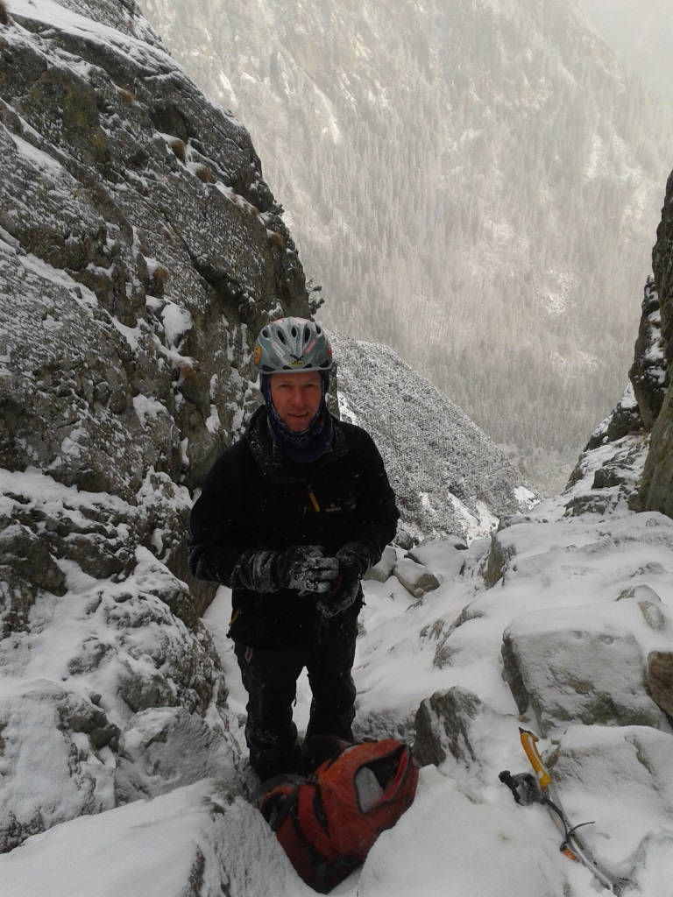
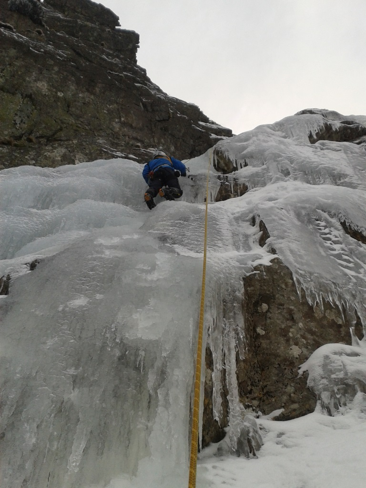
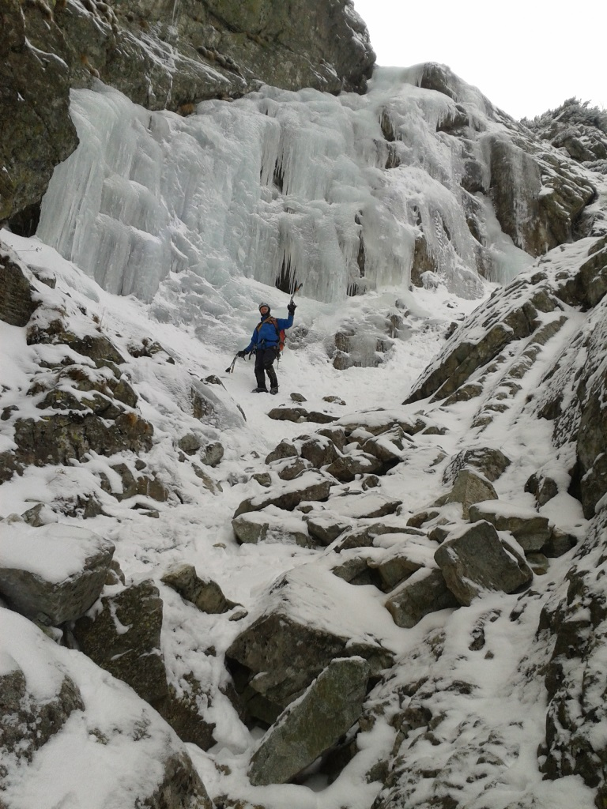

Silvester 2014
2014 · Slovensko, Vysoké Tatry
Úvod zimnej sezóny 2014/15
Úvod tejto sezóny sme začali ako už tradične každoročne okolo Silvestra, vďaka uspokojivým podmienkam aj teraz. Bolo to tušim okolo 28/27/30.12. V Tatrách som už zo dva dni bol a netrpezlivo čakal v BC na Fištróna, čakanie som si spestril lyžovačkou. Fištrónek došiel jedného večera a veruže bol to radostný pohľad na našeho chlapca z Vysočiny. Nabalený alpinista lezeckým materiálom, omotaný dvoma metrami hasičskej klobásy zjavil sa vo dverách s úsmevom od ucha k uchu:-).
Plán som už trošku premyslel, pôjdeme do východných zrázov Slavkovského štítu, tam je takmer vždy na úvod sezóny istota ťuknutia si v nejakom ľade. Tak i tento rok bolo. Hoci „povrávalo sa“ a to dokonca aj na horskej deň pred tým, že „ľad isto ešte nie je“. Jasne že to bolo opačne a ľad samozrejme bol. No a kedže pripravením šťastie praje, prialo aj nám a fajne sme si s Fištrónom zaliezli hoci nad nami už zopár dní zúrila víchrica, dokonca sme boli parádne chránení pred nárazmi skalnými rebrami. Večer v znamení ohne Alkohol posedíme a pokecáme, čo nové na iných ako lezeckých poliach, viacmenej pri čaji, ale zato s klobásou na tanieri.
Na druhý deň meníme lokalitu i navrhujem aby sme vybehli na hřebínek a odtiaľ prejdeme na Sliezsky dom(ďalej SD), lebo šak trasa z Polianky je už dosť okukaná až nezáživná (dole na biku je zábavná). Po príchode na SD dávame každý po pol litra čaju a rozmýšľame či v tej víchrici vystrčíme nos von z hotela. Vietor naozaj skučí, zavíja a vydáva všakovaké hrôzostrašné zvuky, do toho ešte aj dosť sneží.. Nuž ale ako vraví predseda „hrdinovia sa rodia iba v ťažkých podmienkach“ neostáva nám nič iné ako zdvihnúť naše urodzené zadky a štýlom že veď sa ideme iba pozrieť pod Orolínov ľad sa k nemu skutočne aj priblížiť. V doline ani nohy, to by hraničilo tak trochu s úchyláctvom.. Asi sme. Lebo za -16, v silnom vetre a snežení sme ho naozaj preliezli a to až tak, že kamoš Fištrón nešetril na štande slzami, ale nie radosti ale od bolesti, nakoľko chlapcovi trochu omrzli palce:-). Rýchlo zlaniť a ešte rýchlejšie prebehnúť cez záveje, ktoré sa tvorili okolo plesa na SD. Pred hotelom sa vyzliekame a skladáme matroš, vyzeráme ako dvaja polárnici, ale máme dobrý pocit, že sme to nevzdali. Predseda by bol pyšný na nás:-). Čašník a recepčná na nás nechápavo pozerajú, pyšný na nás nie sú. Dávame si čaj a pomaly po tme schádzame do Polianky na električku, ktorá ide až o 50min, tak hurá do Tivoli na Plzeň. Až potom na električku...človek musí mať jednoducho nastavené priority. Chichi. Ďalší deň sa zmôžeme už len na zopár oblúkov na lyžiach a doske a na Silvestra ráno sa Fištrónko s Tatrami a mňou lúči ide dom a ja pokračujem v sviatočnom pokľudnom tempe ešte pár dní užívať Tatranskú pohodu.





Ivík
Pôvodná stránka: archív horecsport.sk